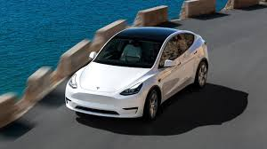

Az elektromos autók története az 1800-as évek végére nyúlik vissza, amikor az első elektromos járműveket kifejlesztették. Az 1830-as években skót feltaláló, Robert Anderson már készített elektromos meghajtású kocsit, de az igazi áttörést csak a 20. század elején érte el, amikor az elektromos autók népszerűsége felívelt. Azonban az elektromos járművek hamar háttérbe szorultak, amikor az olcsóbb, erősebb és nagyobb hatótávú benzinmotorok elérhetők lettek, főként Henry Ford Model T-jének köszönhetően.

Az elektromos autók csak az 1990-es évektől kezdtek újra teret nyerni, különösen a környezetvédelmi szempontok előtérbe kerülésével. Azóta a technológia gyorsan fejlődött, és a mai modern elektromos autók már fejlett akkumulátorokkal, nagy hatótávval és gyors töltési lehetőségekkel rendelkeznek. Az olyan gyártók, mint a Tesla, az elektromos autók piacát forradalmasították, miközben a nagyobb autógyártók is egyre több elektromos modellt kínálnak.
=
Az elektromos autók számos szempontból előnyösebbek, mint a benzines és dízeles járművek: Környezetbarátabbak: Mivel az elektromos autók nem bocsátanak ki szén-dioxidot működés közben, jelentősen csökkentik a légszennyezést és a károsanyag-kibocsátást. Ez különösen fontos a városokban, ahol a közlekedésből származó szennyezés jelentős egészségügyi problémákat okoz.Energiahatékonyság: Az elektromos motorok hatékonyabbak, mint a belső égésű motorok. Az elektromos autók kevesebb energiát veszítenek el hő formájában, így a felhasznált energiának nagyobb része közvetlenül a jármű meghajtására fordítódik.Kevesebb karbantartás: Az elektromos autók kevesebb mozgó alkatrésszel rendelkeznek, ezért általában kevesebb karbantartást igényelnek. Nincs szükség olajcserére, és a fékek is lassabban kopnak az energiatakarékos, regeneratív fékezés miatt.Gazdaságosabb üzemeltetés: Bár az elektromos autók kezdeti beszerzési költsége magasabb lehet, az elektromos energia költsége alacsonyabb, mint a benzin vagy dízel, és sok helyen állami támogatásokat is kínálnak az elektromos autók vásárlásához.